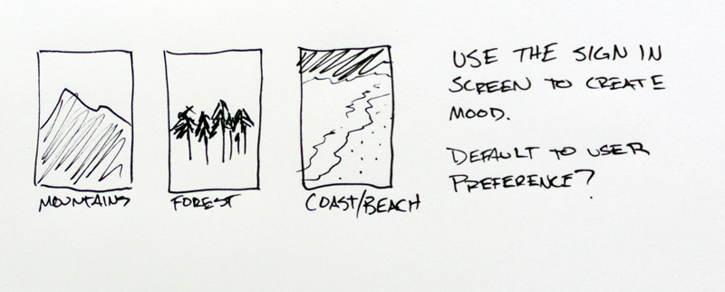
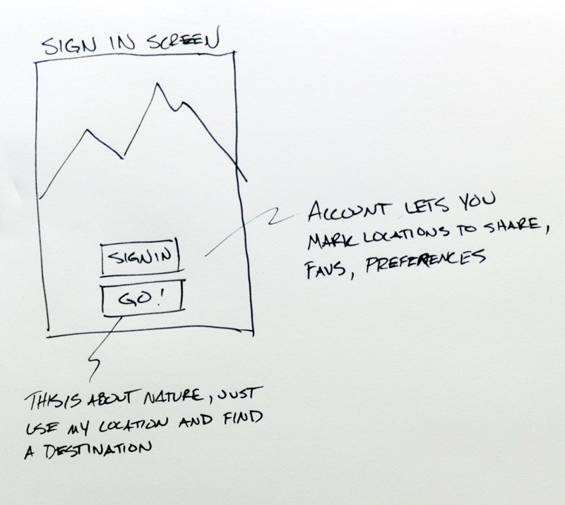

What if I just want to get away, right now?
The inspiration for Calma came as my wife was describing a park near our house that I had never been to. As a hobbyist runner, I'm always excited to know about beautiful outdoor spaces. As she was telling me about the bridges and streams and walkways, I was looking up its location. Turns out, it was so near our house that I now run straight to it from our home.
I jotted down some ideas about marking locations that could be discovered by others. Tagging them with features to help people find an outdoor space that met their preferences.
I wanted to start the experience even before signing in. The whole concept is getting outdoors to a place that is relaxing or inspiring to you, and everyone is different. I wanted to play with the idea of setting a mood based on a type of outdoor feature as the backdrop for the sign in screen.
Social or Go?
There needed to be an option to start right away with as little work as possible. Sign in now and set your preferences, go to a place you favorited or let your social networks know you are heading out? Or head out the door right now? We'll give the user an opportunity to sign in later and add this trip to their profile.